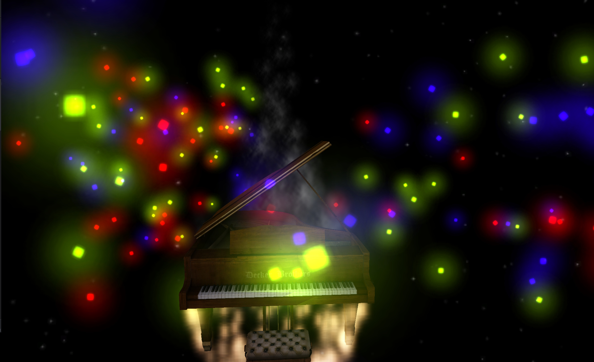
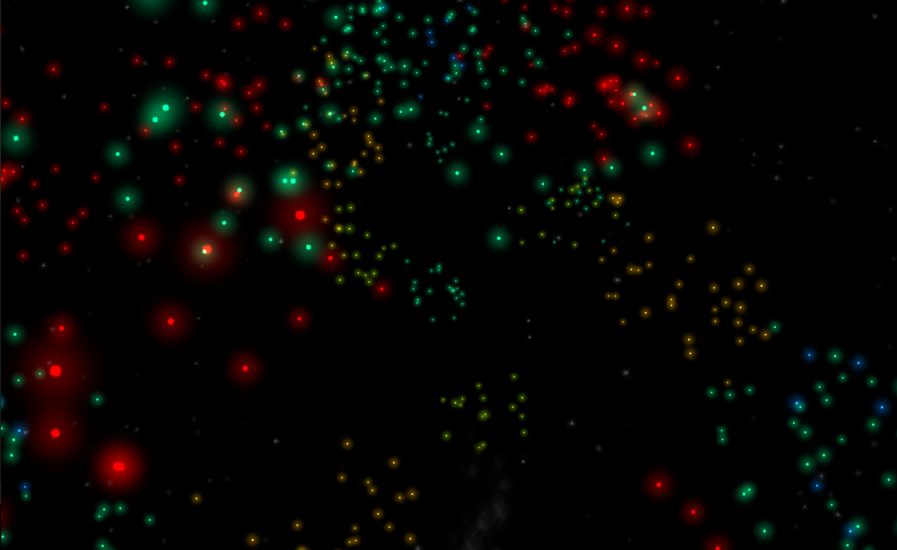

Here I'm using MEZ, an application I developed in the field of computer music to visualize the playing of piano (or any MIDI) instrument in realtime, 3D, Oculus Rift compatible ways.
My goal with this project is to create a virtual world based off the playing of a paino, using the MIDI interface. The eventual goal is to have the entire environment be dynamically generated based on the music. The making of this project draws on everything I've been learning in the past year across computer science, psychology, and music theory/pratice.
I have created a general extensible system for reacting to keyboard playing events, such as the presses of each key, chord structures and composition, and so on. Variant responses are linked to these events, with different colored effects based on the pitch. This results in a type of emergent complexity - different chords have different combinations of effects, and songs in different keys have different color signatures.

Playing a chord in MEZ
I plan to enhance the level of musical analysis to allow more customized reactions to events like interval quality or melodic sequences.
The note particles also spiral upward in such a way that you can look around and see the musical structure of the notes you played recently, like so..

I have built in native support for mixed input types, so the keyboard can be used to test the effects. The keys "q" through "y" are the 8 normal pitches, and the numbers above them are the appropriate sharped versions, with C note starting at "q".
Supports both virtual reality and screen interfaces.
The v0.1 source can be found at my Github project page.